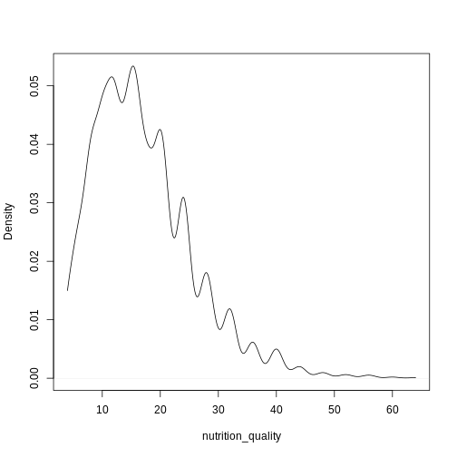
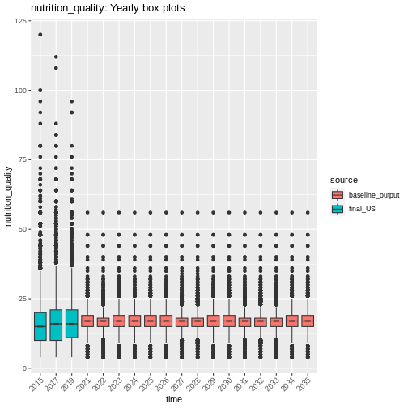
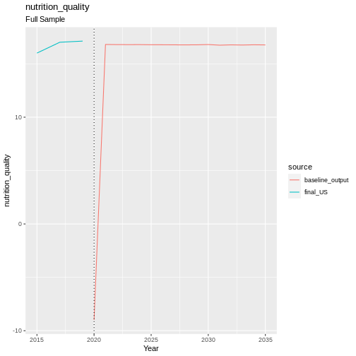
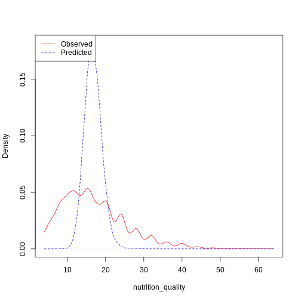
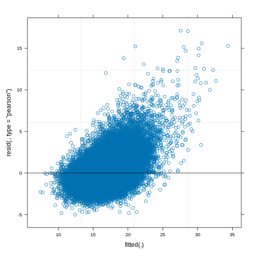

Nutrition
Nutrition Quality is represented by a proxy of the number of portions of fruit and vegetables eaten per week. The following variables from understanding society that measure fruit and vegetable consumption were used:
The equations to generate the nutrition composite are as follows:
Both fruit and vegetable consumption frequency was measured in days per week, and reported as:
Never
1-3 days
4-6 days
Every day
The amount of fruit and veg per day was a continuous variable, indicating the number of portions of fruit or veg eaten on an average day when the respondent eats fruit or veg.
This gives us a continuous nutrition score, composed of the sum of two
proxy values for the amount of fruit and veg eaten per week.
Unfortunately because the days_eating_<>_per_week variables are
ordinal (levels = [Never, 1-3 days, 4-6 days, Everyday]) and not just
the number of days, we can’t calculate an actual value for
amount_per_week.
continuous_density(obs)

Fig. 16 plot of chunk nutrition_quality_data
Transition Model
We use a Linear Mixed Model (LMM) from the lme4 package in R to predict the next state of nutrition quality.
Formula:
print(summary(model))
## Linear mixed model fit by REML ['lmerMod']
## Formula:
## nutrition_quality_new ~ scale(age) + factor(sex) + relevel(factor(ethnicity),
## ref = "WBI") + factor(region) + relevel(factor(education_state),
## ref = "1") + scale(hh_income) + factor(behind_on_bills) +
## factor(financial_situation) + (1 | pidp) + (1 | hidp)
## Data: data
## Weights: weight
##
## REML criterion at convergence: Inf
##
## Scaled residuals:
## Min 1Q Median 3Q Max
## -3.0255 -0.5686 -0.1083 0.4030 10.3602
##
## Random effects:
## Groups Name Variance Std.Dev.
## hidp (Intercept) 2.73 1.652
## pidp (Intercept) 2.73 1.652
## Residual 2.73 1.652
## Number of obs: 71054, groups: hidp, 50106; pidp, 29363
##
## Fixed effects:
## Estimate Std. Error t value
## (Intercept) 16.7777764 0.2699381 62.154
## scale(age) 0.6060477 0.0360846 16.795
## factor(sex)Male -1.3954227 0.0648867 -21.506
## relevel(factor(ethnicity), ref = "WBI")BAN -1.4565355 0.4427054 -3.290
## relevel(factor(ethnicity), ref = "WBI")BLA -0.6508614 0.2919993 -2.229
## relevel(factor(ethnicity), ref = "WBI")BLC -0.9301406 0.3661440 -2.540
## relevel(factor(ethnicity), ref = "WBI")CHI 0.3147231 0.4786396 0.658
## relevel(factor(ethnicity), ref = "WBI")IND -0.8920800 0.2145810 -4.157
## relevel(factor(ethnicity), ref = "WBI")MIX -0.1020393 0.2725847 -0.374
## relevel(factor(ethnicity), ref = "WBI")OAS 0.7394536 0.3105643 2.381
## relevel(factor(ethnicity), ref = "WBI")OBL 0.7382279 0.9522457 0.775
## relevel(factor(ethnicity), ref = "WBI")OTH 0.5721686 0.4993300 1.146
## relevel(factor(ethnicity), ref = "WBI")PAK -2.1172783 0.2658275 -7.965
## relevel(factor(ethnicity), ref = "WBI")WHO 1.5266685 0.1610739 9.478
## factor(region)East of England 0.0004248 0.1552909 0.003
## factor(region)London 0.0234354 0.1582542 0.148
## factor(region)North East -0.2600967 0.1983900 -1.311
## factor(region)North West -0.5042112 0.1542288 -3.269
## factor(region)Northern Ireland -1.8388319 0.2308531 -7.965
## factor(region)Scotland -0.7264878 0.1729765 -4.200
## factor(region)South East 0.2295814 0.1455389 1.577
## factor(region)South West 0.4284066 0.1589688 2.695
## factor(region)Wales 0.6864629 0.2073224 3.311
## factor(region)West Midlands -0.0495381 0.1606992 -0.308
## factor(region)Yorkshire and The Humber -0.5631054 0.1601854 -3.515
## relevel(factor(education_state), ref = "1")0 -0.1515439 0.2474512 -0.612
## relevel(factor(education_state), ref = "1")2 0.3986112 0.2463440 1.618
## relevel(factor(education_state), ref = "1")3 0.9978339 0.2574642 3.876
## relevel(factor(education_state), ref = "1")5 1.2248215 0.2598521 4.714
## relevel(factor(education_state), ref = "1")6 2.3544895 0.2489350 9.458
## relevel(factor(education_state), ref = "1")7 2.8269895 0.2544413 11.111
## scale(hh_income) 0.3559428 0.0332048 10.720
## factor(behind_on_bills)2 -1.2496936 0.1726441 -7.239
## factor(behind_on_bills)3 -2.3421004 0.6048798 -3.872
## factor(financial_situation)2 -0.4663225 0.0754836 -6.178
## factor(financial_situation)3 -0.9698255 0.0957914 -10.124
## factor(financial_situation)4 -0.9704728 0.1660731 -5.844
## factor(financial_situation)5 -1.4928310 0.2674788 -5.581
##
## Correlation matrix not shown by default, as p = 38 > 12.
## Use print(summary(model), correlation=TRUE) or
## vcov(summary(model)) if you need it
## optimizer (nloptwrap) convergence code: 0 (OK)
## Gradient contains NAs
Validation
handover_boxplots(raw.dat, base.dat, v)

Fig. 17 plot of chunk nutrition_validation
handover_lineplots(raw.dat, base.dat, v)

Fig. 18 plot of chunk nutrition_validation
Results

